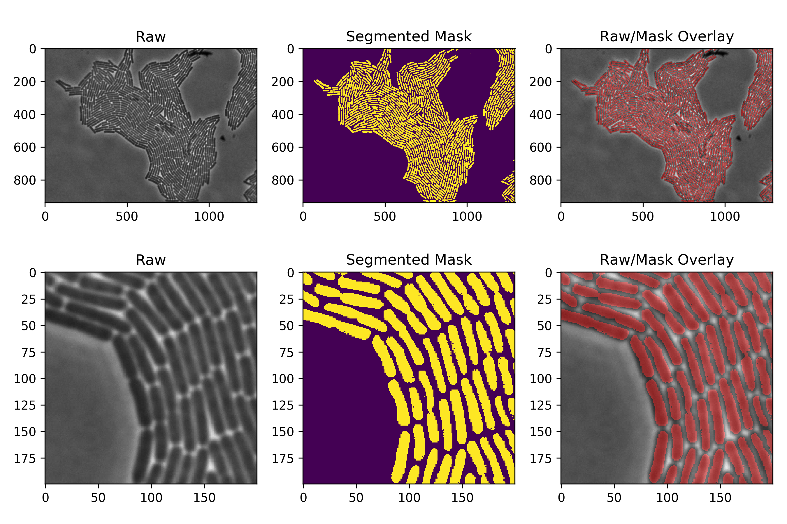

20 September 2017
Segmentation 2 - Initial Demo
Here’s where we dive into the nitty gritty technical details. This post describes training a full working network. The complete description is somewhat involved, so please have some patience. In contrast, the training code itself is quite short! Once you understand the basic idea it becomes straightforward to follow. I promise. :)
Before you dive in, here’s where we’ll end up.
This post is long. To first orient ourselves, let me summarize where we’ll end up. We’ll create and train a deep convolutional neural network to segment bacterial cells in phase contrast microscopy images, coding in Tensorflow. This training code will take less than 200 lines.
To be very concrete, we’re first going to train a network to segment the training image below. The trained network will produce a mask like the one shown. Once trained, it will then segment similiar test images with high accuracy. We’ll show the results for both.

Development and Computation
Let’s pause first and consider two people.
The first: a fan of modern young-adult-dystopian fantasy, planning a movie night.
The second: a student of modern machine learning, looking for a development environment.
What do these two people have in common?
Both have several options.
Several high quality open source machine learning environments exist. Examples include PyTorch, Caffe, Keras, and Tensorflow. I ended up choosing Tensorflow for this demonstration. It’s a Google-backed open source environment with a robust online comunity.
Very roughly, Tensorflow treats neural networks as a graph. A network’s input, hidden, and output layers are graph vertices. A network’s weights are graph edges. Training adjusts the values in these weights, and Tensorflow provides powerful automatic optimization tools for adjusting these weights which simplify numerical coding. To compute values, graph inputs are define and the results flow through the graph, where they can be used to optimize the network’s weights for training. The end result lets one focus on designing a specific neural network architecture for one’s specific application, rather than worrying about re-implementing common numerical computations correctly. All of this is done in the friendly and fungible Python language. Here’s a great animation from Google illustrating how Tensorflow works - we’ll be explaining pieces of this for our network below.

Second, what computing environment should one use? I’ll spare you the another dystopian fantasy image this time, but rest assured the odds here are also ever in your favor. I did all bacterial segmentation work using readily available resources - a personal laptop and Amazon Web Services for cloud computing. I performed most of the heavy lifting in the cloud - specifically a g2.xlarge GPU-containing Amazon Elastic Cloud Compute instance. The EC2 instance is noticeably faster than a laptop, and conveniently can be configured pre-installed with the necessary deep-learning software packages (Tensorflow, NumSciPy, etc - I used Amazon’s Deep Learning AMI AmazonLinux - 2.0 (aml-dfb13ebf)) - this saves a huge amount of headache.
Training Data
Here’s a remarkable thing about this pixel-wise segmentation task - you don’t need a lot of images to get a lot of training data!
In fact, I trained this network with one image.
How could this be? The intuitive reason is that a single image contains roughly 1,000 x 1,000 = 1,000,000 pixels. Each of these pixels provides a training example for pixel classification, therefore we get roughly 1,000,000 training examples per image. Pixel-patch overlap admittedly makes these images somewhat correlated, but despite this the training empirically works well.
To turn this training image into a training data set, I manually segmented the single raw microscopy image shown below. I created three separate masks - one for cells, one for edges, and one for everything else (‘other’). For each pixel location in the original image, only one of the three masks has value 1 - the other two are zero. This provides the training class labels for each pixel. There are several mechanical ways to make these three images - I used the open source microscopy image analysis program ImageJ, which has simple Region of Interest (ROI) tools that can do this.
I want to emphasize that creating this labeled training data is tedious. No surprise here - labeled training data is almost always expensive. I recommend you beg for, borrow, or buy someone else’s time to do this.
With all those preliminaries aside, let’s get down to some initial code.
Code
Implementing this basic segmentation task in Tensorflow turns out to be remarkably simple. The majority of the code here is actually supporting material - training data loading and sampling, and network and error saving during the training process. The actual network definition and computation pieces themselves are brief.
Import Statements
We first import the necessary packages - Numpy to handle arrays, Random to enable random sampling, and Tensorflow itself.
import numpy as np
import random
import tensorflow as tf
Hyperparameters
We next define several hyper-parameters used during training. These parameters control details of the learning process such as the number of gradient descent iterations to perform (‘epochs’), the number of examples to present during each gradient descent step (‘batch size’), the size of the pixel-patch surrounding each pixel, and the optimizer’s learning rate. We also define here numerical parameters for saving frequency.
nepochs = 300000
batchSize = 256
patchSize = 15
learning_rate = 0.0001
interval_display = 50
interval_save = 10000
Training Data Loading
Here we load the training image and class label masks. To make random sampling easier, we then extract the indices of pixels for each class from the respective masks. Finally, we define the path to save the weights and training curves from this particular experiment.
save_path = '/home/ec2-user/Segmentation/Weights/segmentation_experiment_01/'
mask_path = '/home/ec2-user/Segmentation/Masks/'
image_path = '/home/ec2-user/Segmentation/Images/'
im = plt.imread(image_path + 'phase_27.tif')
mask_cells = np.load(mask_path + 'image_027_mask_cells.npy')
mask_edges = np.load(mask_path + 'image_027_mask_edges.npy')
mask_other = np.load(mask_path + 'image_027_mask_other.npy')
inds_cells = np.ravel_multi_index(np.where(mask_cells > 0), mask_cells.shape)
inds_edges = np.ravel_multi_index(np.where(mask_edges > 0), mask_edges.shape)
inds_other = np.ravel_multi_index(np.where(mask_other > 0), mask_other.shape)
Helper Functions
Next we define a few helper fuctions to make the code more readable. The first two simplify expression of the standard convolutional neural network Convolution and MaxPool operations. I copied these directly from the Tensorflow tutorial.
def conv2d(x, W):
return tf.nn.conv2d(x, W, strides = [1,1,1,1], padding = 'VALID')
def maxpool2x2(x):
return tf.nn.max_pool(x, ksize = [1,2,2,1], strides = [1,2,2,1], padding = 'VALID')
The next two simplify declaration of weight and bias variables. Again - these are copied from the Tensorflow tutorial.
def weight_variable(shape):
initial = tf.truncated_normal(shape, stddev = 0.1)
return tf.Variable(initial)
def bias_variable(shape):
initial = tf.constant(0.1, shape = shape)
return tf.Variable(initial)
The final two functions are helper functions. The first implements random sampling for batches. One key feature to note here is that I draw uniformly from the three classes. This ensures that the network is exposed to a similar number of examples of each class. The second saves weights as .npy files.
def getBatch(batchSize, patchSize, rawImage, ind_cells, ind_edges, ind_other):
# This function randomly samples pixels from the image, sampling uniformly
# across the three classes 'cell', 'edge', 'other', indexing from the ind arrays.
# It draws 'batchSize' samples of size 2*patchSize+1 x 2*patchSize+1
#
# Function returns (imageBatch, labelBatch)
# imageBatch is size (batchSize, 2*patchSize+1, 2*patchSize+1,1) - the samples
# labelBatch is size (batchSize, 3) - one-hot class labels.
#
# Code omitted for brevity
def save_weights(file_header, weight_dict):
# This function saves the weights in weight_dict using header file_header.
# Code omitted for brevity.
Network Structure
Our network follows the standard architecture of basic convolutional networks - alternating layers of convolutions, RelU nonlinearities, and Max-Pool operations. The specific layers are:
| Layer | Description | Output Size |
| Input | Pixel-patch | 31x31x1 pixels |
| Convolution + RelU | Field: 4x4, Stride: 1, Depth: 20 | 28x28x20 |
| Max Pool | Field: 2x2, Stride: 2 | 14x14x20 |
| Convolution + RelU | Field: 3x3, Stride: 1, Depth: 40 | 12x12x40 |
| Convolution + RelU | Field: 3x3, Stride: 1, Depth: 80 | 10x10x80 |
| Max Pool | Field: 2x2, Stride: 2 | 5x5x80 |
| Convolution + RelU | Field: 3x3, Stride: 1, Depth: 120 | 3x3x120 |
| Convolution + RelU | Field: 3x3, Stride: 1, Depth: 240 | 1x1x240 |
| Fully Connected + RelU | 240x1000 Matrix | 1x1000 |
| Class Probabilities | 1000x3 Matrix | 1x3 |
I’ll discuss this architecture’s rationale in the next post. To implement this architecture, we first define the appropriate Tensorflow placeholders and variables:
x = tf.placeholder(tf.float32, [batchSize, 2*patchSize+1, 2*patchSize+1, 1])
y_ = tf.placeholder(tf.float32, [batchSize, 3])
W1 = weight_variable([4,4,1,20])
b1 = bias_variable([20])
W2 = weight_variable([3,3,20,40])
b2 = bias_variable([40])
W3 = weight_variable([3,3,40,80])
b3 = bias_variable([80])
W4 = weight_variable([3,3,80,120])
b4 = bias_variable([120])
W5 = weight_variable([3,3,120,240])
b5 = weight_variable([240])
Wfc = weight_variable([240,1000])
bfc = bias_variable([1000])
Wout = weight_variable([1000,3])
bout = bias_variable([3])
Next we define the operations connecting them:
h1_conv = tf.nn.relu( conv2d(x, W1) + b1 )
h1_pool = maxpool2x2(h1_conv)
h2_conv = tf.nn.relu(conv2d(h1_pool, W2) + b2)
h3_conv = tf.nn.relu(conv2d(h2_conv, W3) + b3)
h3_pool = maxpool2x2(h3_conv)
h4_conv = tf.nn.relu(conv2d(h3_pool, W4) + b4)
h5_conv = tf.nn.relu(conv2d(h4_conv, W5) + b5)
h5_flat = tf.reshape(h5_conv, [-1, 240])
h_fc = tf.nn.relu( tf.matmul(h5_flat, Wfc) + bfc )
y_conv = tf.matmul(h_fc, Wout) + bout
Tensorflow graph initialization
The next code sections initialize the remaining necessary portions of the Tensorflow graph - the objective function to be optimized and the specific optimizer used. Since we’re predicting a class probability for each pixel, I will use the standard cross-entropy cost function to measure the disparity between the network’s prediction of a pixel’s class and the actual class label defined in training.
Next, I chose the ADAM method to perform gradient descent on this cost function.
Next, although the cross entropy has desirable mathematical properties for optimization, it’s numerically hard to interpret. I therefore compute the fraction of examples classified correctly in each batch, to let us intuitively track training performance.
Lastly, of course, we initialize all global variables with Tensorflow.
loss = tf.reduce_mean(tf.nn.softmax_cross_entropy_with_logits(labels=y_, logits=y_conv))
train_step = tf.train.AdamOptimizer(learning_rate).minimize(loss)
correct_prediction = tf.equal(tf.argmax(y_conv,1), tf.argmax(y_,1))
accuracy = tf.reduce_mean(tf.cast(correct_prediction, tf.float32))
init = tf.global_variables_initializer()
Training loop
Now it’s time to get to the meat - the training! This code is extremely simple. It starts a Tensorflow session, and during this session iterates for 300,000 epochs. During each epoch, the code performs a gradient descent calculation. To do this, it randomly samples a set (‘batch’) of pixel-patches from the training image, and evaluates train_step using this batch as the input to the placeholder x. train_step evaluates the network with the current weight matrices, calculates the cross-entropy cost function between the network’s classification of the batches and their labels, and performs the gradient descent step with the Adam optimizer.
with tf.Session() as sess:
sess.run(init)
for i in range(nepochs):
batch = getBatch(batchSize, patchSize, im, inds_cells, inds_edges, inds_other)
sess.run(train_step, feed_dict={x: batch[0], y_: batch[1]})
# Also some additional code (not shown) to save weight matrices, training loss, and accuracy
Training Progression
It took me roughly 6 hours to train a network for 300,000 epochs on an Amazon g2.xlarge EC2 GPU-enabled instance. Training this network typically proceeds very smoothly. One way to quantify this is by plotting how the training accuracy improves during the training process. Below, we plot training mistake percentage - the percent of examples in each batch the network makes a mistake on at each training epoch. We plot this curve for three different training runs.
Several features pop out from these plots:
- The curves behave very similarly to one another - training behaves reproducibly.
- Misclassification percentage decreases in a noisy fashion - we’re performing stochastic gradient descent.
- The network improves until hitting the resolution limit of our batch size,
1/256 ~ 0.00391
Performance
Let’s visualize how well our network performs at segmenting actual images.
Recall that the network actually works by classifying each pixel in an image into one of three classes - {cell, edge, other}. More specifically, each pixel is assigned a 3-dimensional class probability vector{p(cell), p(edge), p(other)}, with p(cell) + p(edge) + p(other) = 1. Note that I’m not showing code - yet - for the actual classification computation. We’ll do that in another post. :)
Here’s a plot of a segmentation of the original training image, along with the corresponding computed class probabilities (cell, edge, other).
Now let’s segment an image that the network wasn’t trained on, in other words a test image.
To turn these into a final prediction, we simply threshold the cell class probability map (all pixels with cell probability greater than 0.8) to convert it into a mask.
As you can see, the segmentation is still good, but not perfect. This isn’t surprising for such a simple network. Here are a few of the issues we see:
- The class probability predictions look “rougher”. For example, the cell edges are jagged.
- Cells contain little ‘holes’ in them.
The core cause of these effects is simple - each pixel is classified independently of others. Sure, the patches used to compute class probabilities for two adjacent pixels may overlap, but there is no sense of connected components or pixels.
How can we address this problem simply and effectively? Averaging provides a solution. In particular, I’ll use two types of averaging - averaging over networks, and averaging over space. What do I mean by these?
Averaging over networks means that we average the class probabilities produced by several networks into a single, average class probability. Why might this work? Intuitively, recall that we train the network using stochastic gradient descent. The training process is random because we choose pixel batches for each gradient descent step randomly. This means that if we repeat the network training process several times, the resulting weight matrices will be different each time. This suggests that averaging the classification results of matrices from multiple training runs will average out some of the more idiosyncratic classifications. I chose to average over 3 independently trained networks.
Averaging over space means that we average the class probabilities over adjacent pixels. Here, we take into account our prior knowledge that cell pixels should cluster together. I chose to run a median filter over adjacent pixels.
It turns out that combining these two techniques, averaging over realizations and averaging over space, works well to clean up the image.
And now that we have these techniques, we can finally create our final workable segmentation mask.
Let’s roughly quantify how well these networks perform against each other in training and testing. A first cut at this checks whether the cells we get from different segmentations are the same size.
To check this, I segmented three images using our trained networks and the post-processing described above. All three images were taken under identical illumination conditions. The first was the original training image, and the next two were test images. I then extracted the size, in pixels, of each object in each of the masks using scipy.ndimage.measurements.label. For comparison, I also extracted the size of objects in the original hand-labeled mask. I then plotted the size distributions, shown below. Note that they look very similiar, which is encouraging! Two-sample Kolmogorov-Smirnov tests on all pairs of these empirical distributions (scipy.stats.ks_2samp) give p-Values all larger than 0.24, which supports the similarity of the distributions.
(A sharp eye will actually spot an interesting idiosyncrasy in this graph - I’ll leave it, and its explanation, as an exercise for the reader. :)
Conclusion
Let’s summarize what we’ve done here. We’ve created and trained a simple convolutional neural network that segments bacterial cells in micrscopy images. The network trains consistently and segments test images with high accuracy, especially after incorporating some simple post-processing. The code to implement this in Tensorflow is short and transparent, weighing in at under 200 lines. You can find materials for this example (code, trained networks, and training and test images), in my repo.
In the next two posts, we’ll dig a bit deeper into our choices of neural network architecture. We’ll also describe how segment images with these trained networks quickly and efficiently.